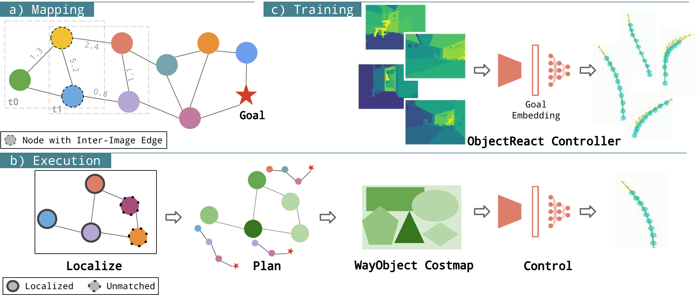
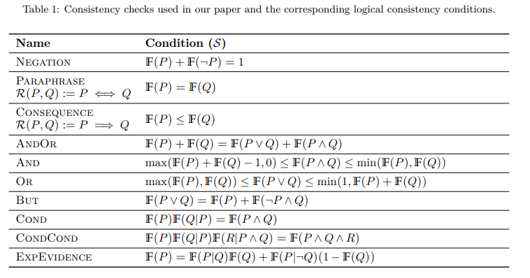
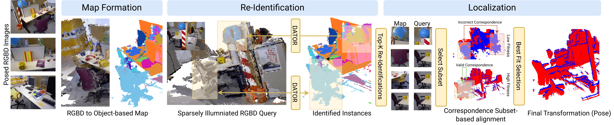

|
Vineeth Bhat Software Engineer at Stripe. Domains that pique my interest are ML, Robotics and Software (& distributed) systems. Did my undergrad in Computer Science and Engineering from IIIT Hyderabad, where I graduated at the top of my cohort, and conducted research advised by Prof. K. Madhava Krishna and Dr. Sourav Garg in robotics. |
{kind=link}
Research |
|
 |
ObjectReact: Learning Object-Relative Control for Visual Navigation
Sourav Garg*, Dustin Craggs*, Vineeth Bhat, Lachlan Mares, Stefan Podgorski, Madhava Krishna, Feras Dayoub, Ian Reid CoRL, 2025 project page / arXiv / twitter An object-relative control framework for visual navigation using a relative 3D scene graph, enabling more flexible, embodiment-invariant path planning and control that generalizes better across tasks and real-world environments than traditional image-relative methods. |

|
SparseLoc: Sparse Open-Set Landmark-based Global Localization for Autonomous Navigation
Pranjal Paul*, Vineeth Bhat*, Tejas Salian, Mohammad Omama, Krishna Murthy Jatavallabhula, Naveen Arulselvan, K. Madhava Krishna IROS, 2025 (Oral) project page / arXiv A global localization system that uses VLMs to build sparse, semantic maps. It achieves localization accuracy comparable to dense LiDAR methods while using 500x fewer points. Deployed in production by Ati Motors. |
|
 |
Consistency Checks for Language Model Forecasters
Daniel Paleka*, Abhimanyu Pallavi Sudhir*, Alejandro Alvarez, Vineeth Bhat, Adam Shen, Evan Wang, Florian Tramèr ICLR, 2025 (Oral) arXiv / project code / twitter Proposes a new framework for evaluating LLM-based forecasters by measuring their logical consistency, introducing an "arbitrage metric" that correlates strongly with future forecasting accuracy, even when the ground truth is unknown. |
|
 |
Towards Global Localization Using Multi-Modal Object-Instance Re-Identification
Aneesh Chavan, Vaibhav Agrawal*, Vineeth Bhat*, Sarthak Chittawar*, Siddharth Srivastava, Chetan Arora, K Madhava Krishna Advanced in Robotics, 2025 (Oral) project page / arXiv A framework to build an object-based global map, and enables localization over it through a novel dual path transformer architecture that performs multi-modal instance re-identification. |
Miscellanea |
Teaching Assistantship |
Teaching Assistant, Software Engineering, Spring 2025
Teaching Assistant, OS & Networks, Fall 2023 |
Academic Service |
Reviewer, 2026 IEEE RSJ International Conference on Intelligent Robots and Systems (IROS) |
|
Appropriated from Jon Barron's source code with a few tweaks of my own. |